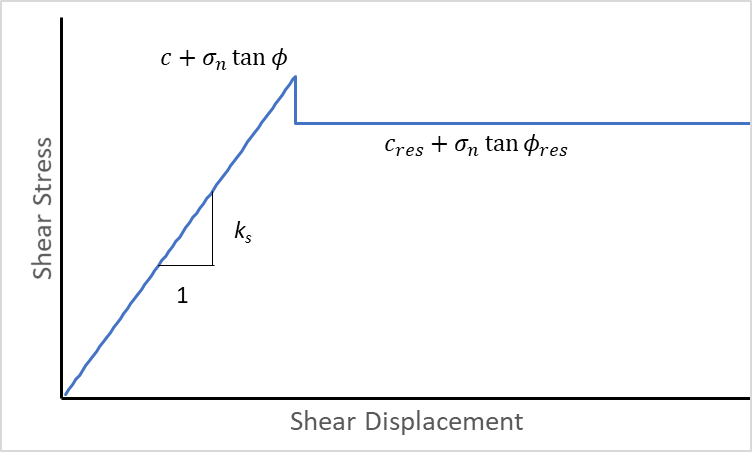
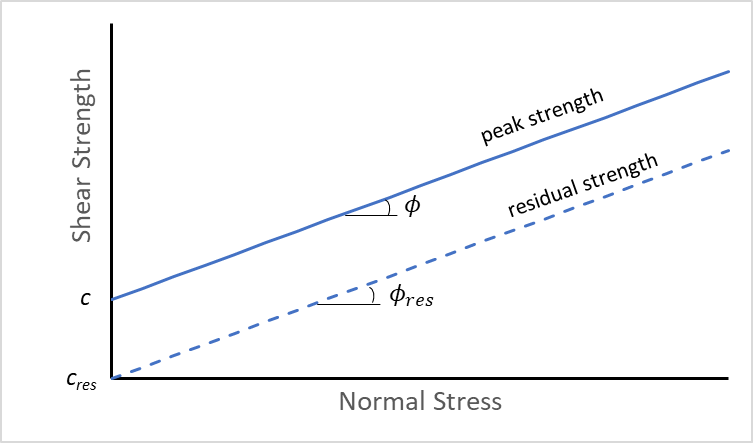
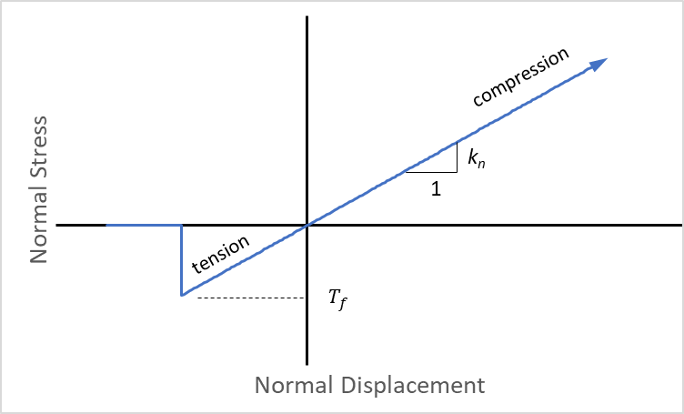
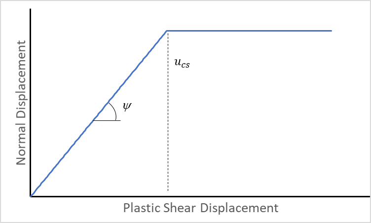
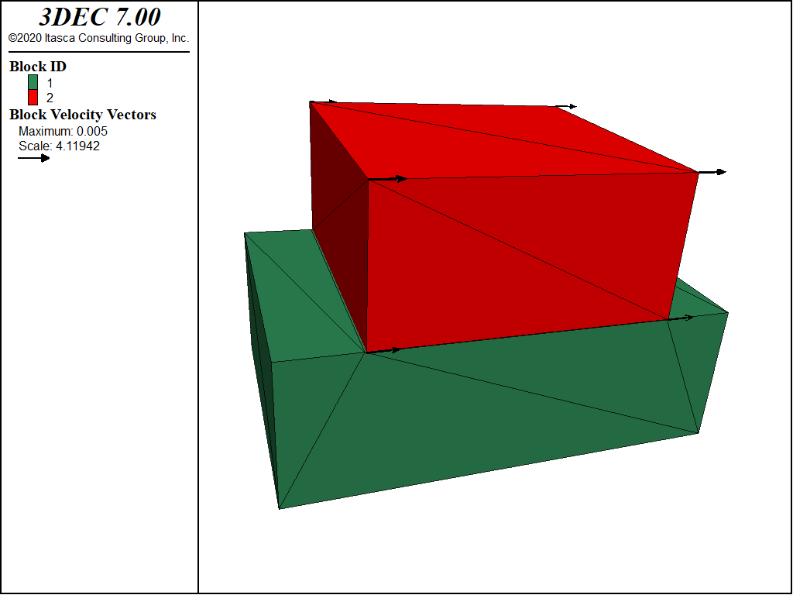
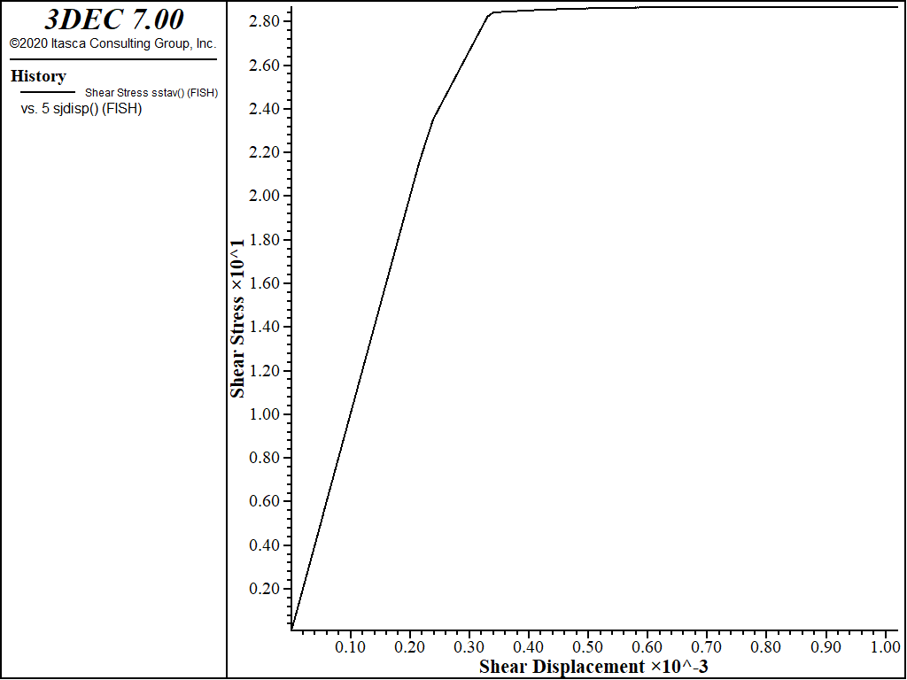
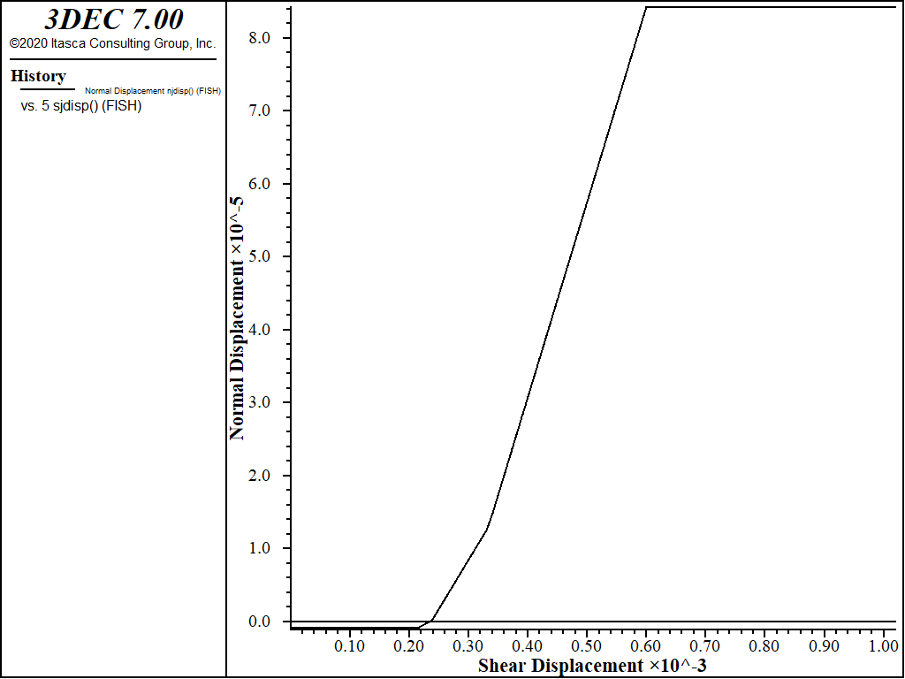
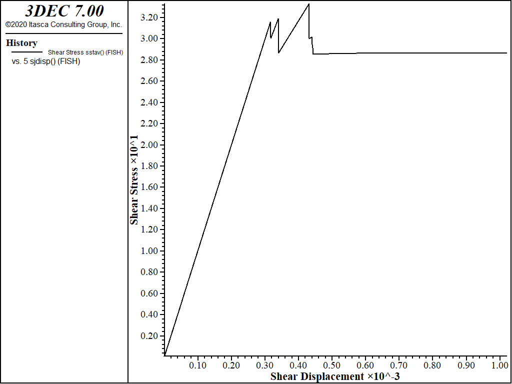
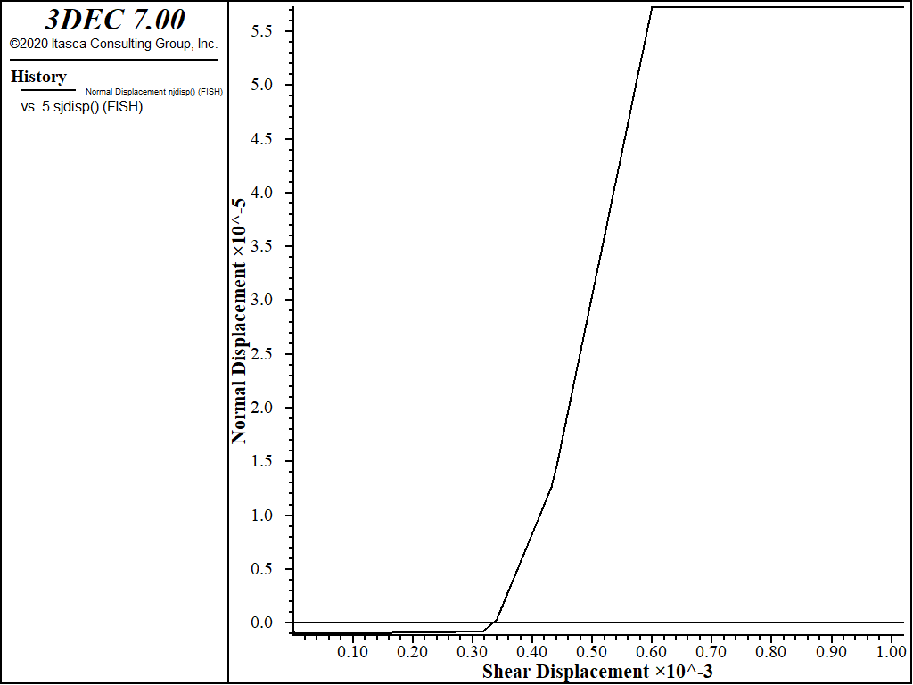

3DEC 中的 Mohr-Coulomb 节理模型
Coulomb 滑移模型以线性关系表示节理刚度和屈服极限，基于岩石节理常见的弹性刚度、摩擦强度、黏聚强度、抗拉强度属性以及剪胀特性。该模型可选择通过在剪切或拉伸破坏开始时丧失黏聚强度和抗拉强度，模拟节理的位移弱化。
公式
在应力达到峰值强度之前，节理上的剪应力和法向应力按弹性模型发展。峰值剪应力为：
其中，\(c\) 为黏聚力，\(\sigma_n\) 为法向应力，\(\phi\) 为摩擦角。
超过峰值抗剪强度时，抗剪强度瞬间降至残余抗剪强度。此后剪应力不能超过残余强度。残余强度为：
其中，\(c_{res}\) 为残余黏聚力，\(\phi_{res}\) 为残余摩擦角。
在 3DEC 中，默认 \(c_{res} = 0\) 和 \(\phi_{res} = \phi\)。
典型的剪应力与剪切位移关系见图 1（Figure 1），采用残余黏聚力和摩擦默认值时的破坏包络线见图 2（Figure 2）。


图 1：3DEC Mohr-Coulomb 节理的剪应力与剪切位移关系。


图 2：3DEC 节理 Mohr-Coulomb 剪切破坏准则。
抗拉强度为用户定义的单一值 \(T_f\)。随着节理张开，节理法向应力按弹性模型所述的法向刚度减小（假定压应力为正）。法向应力受抗拉强度限制。超过抗拉强度时，节理法向应力变为残余抗拉强度（\(T_f^{res}\)）。默认残余抗拉强度为 0。Mohr-Coulomb 节理的典型法向应力行为见图 3（Figure 3）。


图 3：3DEC Mohr-Coulomb 节理的法向应力与法向位移关系。
其中，\(u_s\) 为塑性剪切位移，\(u_{cs}\) 为临界塑性剪切位移。\(u_{cs}\) 的默认值为无穷大（无剪胀限制）。
无约束节理的典型剪胀行为见图 4（Figure 4）。


图 4：3DEC Mohr-Coulomb 节理模型中无约束节理的剪胀行为。
状态
每个子接触都有对应的破坏状态。可绘制破坏状态（Joint Subcontact 绘图项），并通过 FISH（子接触状态（block.subcontact.state））查询。使用 FISH 查询时，状态由一个 64 位变量表示，每一位对应一种可能状态。下表列出了 Mohr-Coulomb 模型的可能状态。
| MC 破坏状态 | 值 | 标签 |
|---|---|---|
| 当前发生剪切破坏 | 1 | slip-n |
| 当前发生拉伸破坏 | 2 | tension-n |
| 过去发生过剪切破坏 | 4 | slip-p |
| 过去发生过拉伸破坏 | 8 | tension-p |
通过置位不同位，可组合多种状态。例如，过去曾拉伸破坏、当前正在剪切破坏的子接触，其状态值为 8 + 1 = 9。值为 0 表示未破坏，即弹性状态。
示例
以下示例通过一个简单试验模型说明其行为。问题应用是分析地下开挖周围的节理滑移。创建一个简单模型，以评估 Mohr-Coulomb 滑移模型是否足以表示节理在剪切荷载作用下的响应。
要在 3DEC 中查看本例，使用菜单命令 。选择“3DEC/ Constitutive_Models/ JMohr”，再选择“slip.prj”加载。所用数据文件（data file）列于本例末尾。
该试验模拟直剪试验，其中只有一条水平节理，先施加法向约束应力，再施加单向剪切位移。图 5（Figure 5） 显示了该模型；节理由一个包含 10 个子接触的接触定义。


图 5：3DEC Mohr-Coulomb 节理模型中无约束节理的剪胀行为。
首先施加 20 MPa 的法向应力，以代表作用在节理上的约束应力。随后对上部块体施加水平速度，产生同样可代表该应用问题中预期位移的剪切位移。为演示起见，本模型仅施加小于 1 mm 的较小剪切位移。
用 FISH 函数（sstav）测量节理上的平均法向应力、剪应力、法向位移和剪切位移。根据这些信息，可确定不同模型产生的峰值和残余抗剪强度及剪胀。采用 Mohr-Coulomb 滑移模型进行本试验的数据文件见示例 slip.dat。
图 6（Figure 6） 绘出了节理平均剪应力与剪切位移的关系，图 7（Figure 7） 绘出了平均法向位移与剪切位移的关系。这些图表明，在给定模型属性和条件下会发生节理滑移。图 6（Figure 6） 中，达到约 2.9 MPa 的峰值抗剪强度之前，加载段斜率为线性。如图 7（Figure 7） 所示，在剪切位移约为 0.3 mm、节理发生剪切破坏时，节理开始剪胀。剪胀持续至达到不再剪胀的极限剪切位移（dilation-zero = 0.6 mm）。最大平均剪胀量约为 0.077 mm。


图 6：黏聚力 = 0 时，Mohr-Coulomb 节理模型的平均剪应力与剪切位移关系。


图 7：黏聚力 = 0 时，Mohr-Coulomb 节理模型的平均法向位移与剪切位移关系。
这些结果表明，黏聚力为零的 Mohr-Coulomb 滑移模型仅为节理定义一个极限抗剪强度值。节理开始滑移后的剪胀近似表示为剪胀角的线性函数，其剪胀上限为剪切位移的函数。
将节理黏聚力设为 10 MPa（BLOCK CONTACT PROPERTY COHESION = 10），可近似表示位移弱化行为。破坏开始时，将黏聚力设为零。图 8（Figure 8） 中的结果展示了考虑黏聚力影响后形成的峰值强度和残余强度。注意，强度下降是突发的。在相同极限剪切位移下，最大剪胀量（见图 9（Figure 9））小于之前无黏聚力的情况，因为节理初次破坏前已发生更多剪切位移。（比较图 9（Figure 9） 与图 7（Figure 7）。）
注意，如果具有黏聚强度的节理不发生弱化，应将残余黏聚力（cohesion-residual）设为等于峰值黏聚力（黏聚力（cohesion））。此时，节理破坏时黏聚力不会改变。


图 8：黏聚力 = 10 MPa 时，Mohr-Coulomb 节理模型的平均剪应力与剪切位移关系。


图 9：黏聚力 = 10 MPa 时，Mohr-Coulomb 节理模型的平均法向位移与剪切位移关系。
slip.dat
model new
model large-strain on
; 库仑滑移节理模型
; 直剪试验
;
block create brick -0.15,0.15 -0.10,0.10 -0.10,0
block create brick -0.10,0.10 -0.10,0.10 0,0.10
block zone generate edgelength 0.2
block zone cmodel assign elastic
block zone prop dens=0.0026 bulk=4000 shear=3000
;
; 库仑滑移模型
block contact jmodel assign mohr
block contact prop stiffness-normal=100000 stiffness-shear=100000 ...
friction=30.0 dilation 15 dilation-zero 6e-4
;; 利用黏聚力模拟弱化行为
;block contact prop cohesion 10
block contact material-table default prop stiffness-normal=100000 stiffness-shear=100000 ...
friction=30.0 dilation 15 dilation-zero 6e-4
block hide range pos-z 0 1
block gridpoint apply vel 0 0 0 range pos-z -1 0.1
block hide off
;
; 法向荷载
block face apply stress 0 0 -50 0 0 0 range pos-z 0.1
;
model cycle 100
;
; 用于计算平均节理应力
; 和平均节理位移的函数
;
fish def sstav
local sstav_vec = vector(0,0,0)
nstav = 0.0
njdisp = 0.0
local sjdisp_vec = vector(0,0,0)
local jarea = 0.0
loop foreach cx block.subcontact.list
; 按面积加权
local area_ = block.subcontact.area(cx)
sstav_vec = sstav_vec + block.subcontact.force.shear(cx)
nstav = nstav + block.subcontact.force.norm(cx)
njdisp = njdisp + block.subcontact.disp.norm(cx)*area_
sjdisp_vec = sjdisp_vec + block.subcontact.disp.shear(cx)*area_
jarea = jarea + area_
endloop
if jarea > 0
sstav = math.mag(sstav_vec) / jarea
nstav = nstav / jarea
njdisp = njdisp / jarea
sjdisp = math.mag(sjdisp_vec) / jarea
endif
end
;
block contact reset disp
; 剪切荷载
block hide range pos-z -.1 0.0
block gridpoint apply vel-x=0.005 range pos-z -.1 1.1
block gridpoint apply vel-y 0 range pos-z -1 1
block hide off
;
his interval 5
model hist mechanical unbal-max
fish hist name 'Shear Stress' sstav
fish hist name 'Normal Stress' nstav
fish hist name 'Normal Displacement' njdisp
fish hist name 'Shear Displacement' sjdisp
;
block contact hist disp-shear pos -1 -1 0
block contact hist disp-norm pos -1 -1 0
block contact hist disp-shear pos -1 1 0
block contact hist disp-norm pos -1 1 0
block contact hist disp-shear pos 0 0 0
block contact hist disp-norm pos 0 0 0
block contact hist stress-shear pos -1 -1 0
block contact hist stress-norm pos -1 -1 0
block contact hist stress-shear pos -1 1 0
block contact hist stress-norm pos -1 1 0
block contact hist stress-shear pos 0 0 0
block contact hist stress-norm pos 0 0 0
block contact hist force-shear pos -1 -1 0
block contact hist force-norm pos -1 -1 0
model cyc 15000
model save 'slip1'
program return
| 这些内容对您有帮助吗？… 版权与免责声明 | FLAC3D © 2019, Itasca | 原文更新于 2020 年 10 月 8 日 |